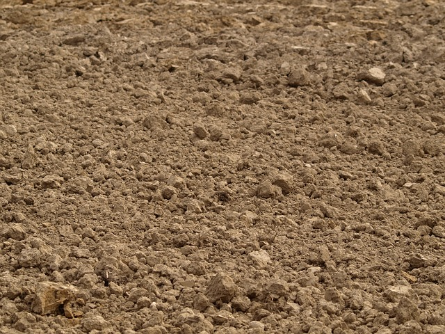
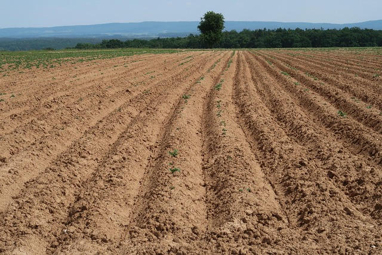
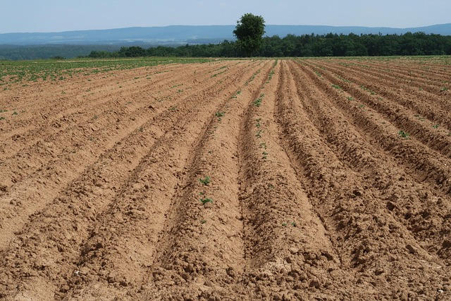

Farming Region Two- Central Plateau
Soil characteristics
Region Two spans much of the central plateau of Zimbabwe, including parts of Mashonaland and Midlands. It has moderate to high rainfall and relatively fertile soils, making it one of the most productive farming areas in the country
Here's a bit more detail about these soil types in Region Two:
Greyish brown sands and sandy loams :
These soils are predominantly derived from granitic rocks, which underlie much of the region.Cambisols, Luvisols, and Arenosols:
These are the main soil classifications associated with the greyish brown sands and sandy loams.Soil types in Region 2 of Zimbabwe: